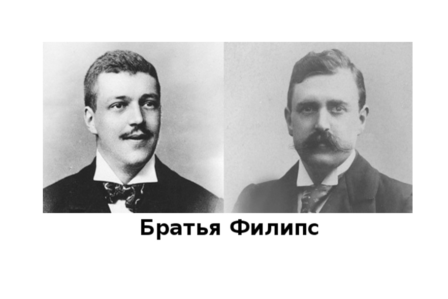
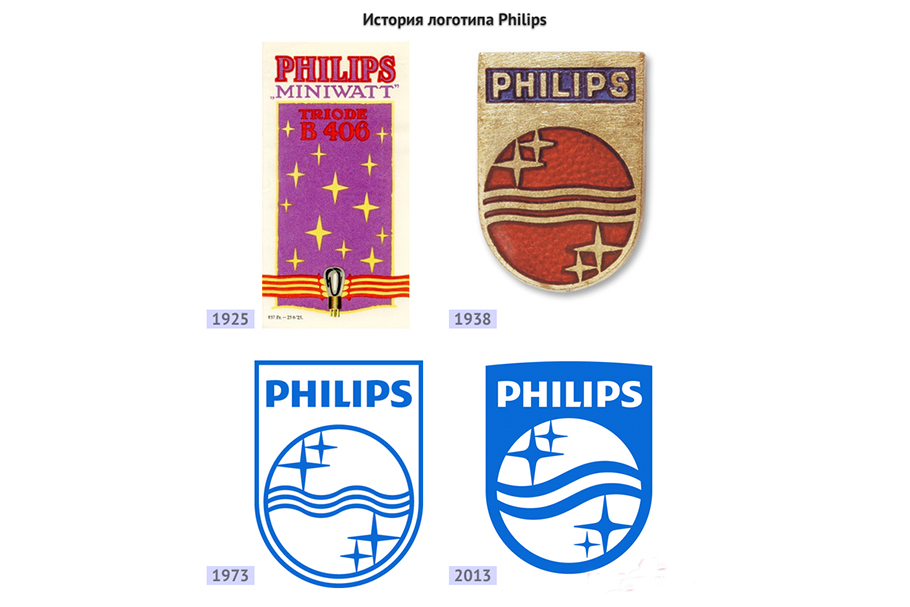

Зміст
Брати Філіпс ⇧
Наприкінці XIX століття Джерард Філіпс, випускник політехнічного університету, вирішив розробити власну технологію виробництва ламп розжарювання, відмінну від тієї, яку запропонував Tомас Едісон. Разом з Хіміком Яном Ріізом він незабаром створив свою першу лампочку з вуглецевою ниткою розжарювання, а за кілька місяців довів її ресурс до прийнятного значення. Саме тоді йому спала на думку ідея створити власну компанію. У 1891 році ідея була реалізована, і Джерард Філіпс разом зі своїм братом Антоном Філіпсом організував у місті Ейндховені компанію з виробництва ламп розжарювання та інших електричних продуктів. Виробництво велося у занедбаному орендованому приміщенні потужністю 200 ламп на день.
Старт підприємства та перші успіхи ⇧
Лампи розжарювання були дуже популярні в той час, тому продукція заводів з виробництва ламп Philips NF
(Philips electric Lamp factories) була широко поширена спочатку в Нідерландах, а потім по всій Європі. Вже
1900 року на братів Філіпс працювало 1400 людина, а
1910 році — 2000 людина - неймовірна на той час цифра.
Жерар та
Антон Філіпс на той час не лише створили потужне виробництво, а й показали світові приклад нових ділових
відносин. Їхній девіз — «цифри важливі, але люди важливіші» — не лише показав свою
життєздатність та
правильність у ті часи, а й дожив до нашого часу, його застосовують і сучасні топ-менеджери у компанії.
У
1999 році брати посмертно удостоєні звання «Кращий підприємець XX століття» в
Нідерландах.
Однак повернемося до тих далеких часів. Ділові якості братів-підприємців були
настільки високо оцінені
королевою Вільгельміною, що в 1916 вона дозволила їм додати королівське «Royal»
до
назви компанії, і з цього
часу назва компанії була перетворена в Royal Philips.
Пошук нових ніш та напрямків ⇧
Засновники звернули увагу на якісний стрибок у галузі медицини, викликаний винаходом рентгенівських променів, і вирішили зайняти міцну позицію на ринку медичних пристроїв. Це призвело у 1918 році не тільки до створення медичної рентгенівської трубки, але й до утворення окремого відділу у структурі компанії-медичної системи у 1927 році, яка успішно існує і сьогодні. У тому ж 1927 році Philips взялася за іншу область, яка набула популярності – радіо. За цей час в УКХ-діапазоні був створений радіоприймач, а в 1932 році Philips стала найбільшим у світі виробником радіоприймачів та радіотрубок, продаючи мільйон одиниць на рік. Сорокові роки пройшли під знаком телебачення, але передумови цього були вже 1925 року. За цей час компанія Philips research laboratory почала тестувати телевізійний сигнал, і в 1928 міг показати громадськості перший телевізор! Philips також зробила великий внесок у розвиток запису, передачі та відтворення телевізійних зображень. Дослідження у цій галузі сприяли розробці трубки Plumbicon для телевізійної камери та покращенню фосфору для створення кращого зображення. У 1950 році добро отримало ще одне нововведення, яке спочатку з'явилося як побічний продукт виробництва ламп розжарювання: головок, що обертаються, на основі яких пізніше була розроблена електробритва Philishave. Потік дивовижних ідей та продуктів тривав до 70-х років. Дослідження в галузі освітлювальних приладів призвели до створення нових фотолюмінесцентних і енергозберігаючих ламп, що світяться. Важливі технічні інновації з'явилися в області обробки, зберігання та передачі зображень, звуку та даних: основним досягненням Philips був винахід оптичного LaserVision, компактного диска та Optical Telecommunications Systems. 1972 ознаменувався створенням дочірньої компанії під назвою PolyGram. У 1974 Magnavox був придбаний, а в наступному, 1975, Sygnetics (США) приєдналася до списку успішних покупок. У 1980-х роках Philips продовжувала купувати різні компанії. До них належали телевізійна продюсерська компанія GTE Sylvania, куплена в 1981 році, та компанія з виробництва ламп Westinghouse (1983). Того ж таки 1983 року було розпочато виробництво компакт-дисків, іншими досягненнями того часу є випуск ста мільйонів телевізорів у 1984 році, а 1985 року — трьохсот мільйонів електробритв Філішаве.
Кризи ⇧
«Філіпс» пережив кілька проблемних періодів, що загрожували їй найнеприємнішими наслідками, але криза — лише крок до розвитку компанії. Перший період був пов'язаний з економічною кризою 1929 року. Усього за 3 роки продаж Philips знизився майже в 6 разів. Через кризу 1931 року компанія навіть не відсвяткувала свій сорокарічний ювілей, і частину співробітників було звільнено. Однак навіть у таких умовах велася робота з розширення та модернізації виробництва. Успішному відновленню після кризи сприяла стійка висока якість товарів, а також нові винаходи, пов'язані з телебаченням і мовленням. Другий складний період стався у 80-х роках, коли потужні японські корпорації голосно заявляли себе на ринку побутової електроніки. Компанія зазнала великих збитків і в перспективах бачилися песимістичні прогнози. Потім керівництво компанії розробило так звану «Операцію Центуріон», що включає відмову від безперспективних сфер діяльності, скорочення адміністративного апарату, прискорення впровадження нових розробок та низку інших заходів. Через три роки Philips відновила свої втрачені позиції та навіть почала нарощувати виробництво.
Науково-дослідницька діяльність ⇧
Постійне зосередження уваги на наукових дослідженнях стало одним із основних факторів, що забезпечили довговічність компанії.
Ще на початку 1981 року, коли Джерард Філіпс розпочав виробництво ламп розжарювання, поза заводу вже існувала окрема промислова дослідницька лабораторія.
У ті роки це було зовсім неприбутковою справою, оскільки дослідження були довірені ентузіастам-одинакам чи поважним світилам науки.
У 1913 році було зроблено ще один важливий крок - відкриття фізичної лабораторії, яку очолив д-р Жіль Хост (Gilles Holst), відомий голландський фізик, який винайшов у 1932 натрієву лампу низького тиску. Вже в 1914 році дослідні лабораторії (які вже називалися Philips Research) послідовно вивчали та вирішували проблеми виробництва вакуумних трубок, рентгенівських апаратів, технологій та обладнання для телебачення та радіомовлення. Дослідження Philips досягли особливо великих масштабів у повоєнні роки, коли швидке зростання промисловості просто вимагало від підприємств постійно працювати над удосконаленням своєї продукції. Колосальні інвестиції в дослідницький відділ компанії принесли свої плоди: компанія почала випускати широкий асортимент продукції і як єдина європейська компанія змогла на рівних конкурувати з японськими виробниками. В даний час компанія має 30 дизайнерських офісів та 4 системні лабораторії.
Компанія Philips володіє багатьма винаходами та технологіями (понад 100 тисяч активних патентів). Найбільш значними з них вважаються:
- електричний грамофон -1930
- автомобільний приймач - 1934
- телевізійна передача - 1935
- довгограюча платівка - 1948
- стереозвук - 1958
- компактна аудіокасета - 1963
- кольоровий телевізор -1964
- цифровий компакт-диск - 1982
Логотип компанії ⇧
Розвиток бренду Philips настільки чітко відображає мінливі смаки та переваги людей з часом, що це невід'ємна частина історії компанії. Спочатку бренд не був однорідним, про що свідчать зовсім інші зображення імені на першому бланку, логотип, що поєднує початкові літери імені Philips & Co, та слово Philips, вигравіруване на основі ламп розжарювання. У 1898 році Антону Філіпсу спала на думку ідея використовувати популярні листівки з національними голландськими костюмами в рекламних цілях. Наприкінці 20-х років логотип почав набувати знайомих форм. Знамениті хвилі та зірки на значку Philips вперше з'явилися на упаковці радіотрубок та диктофона Philigrah у 1926 році. Хвилі символізували радіохвилі, а зірка — вечірнє небо, яким «проходили» радіохвилі. У цей час вечорами сім'ї збиралися по радіо, щоб послухати новини та розважальні програми.
Світове лідерство ⇧
Philips зараз – провідний виробник побутової техніки, а також прогресивної та новітньої медичної. Більше того, вона є незмінним флагманом у виробництві освітлення. У 2011 році Philips показала світові світлодіодний аналог 75-ватної лампи - такого до неї ніхто не робив. Зі світлодіодні лампи славляться тим, що термін служби — у 25 разів більший за аналог. Загалом закладений вектор успіху, заснований на інноваціях та розробці нових технологій братами Філіпс, досі приносить свої плоди і компанія визнана у всьому світі, бренд Philips однозначно є еквівалентом якості та фірмовості.